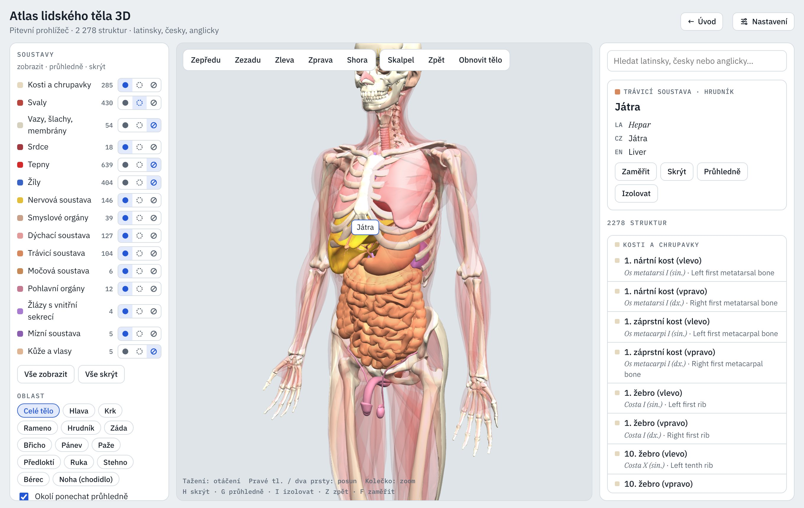

Virtuální pitva
Skalpelem odebíráte struktury jednu po druhé od povrchových svalů až ke kostře. Cokoli vrátíte jedním kliknutím.
3D anatomie pro studenty medicíny
Odkrývejte tělo vrstvu po vrstvě, procházejte ho řezy a učte se názvy struktur latinsky, česky i anglicky. Bez instalace, na počítači i v mobilu.

Funkce
Atlas je postavený na segmentovaném modelu dospělého muže. Každý sval, kost, orgán i céva je samostatná struktura, kterou můžete vybrat, schovat nebo zkoumat zvlášť.
Skalpelem odebíráte struktury jednu po druhé od povrchových svalů až ke kostře. Cokoli vrátíte jedním kliknutím.
Sagitální, frontální i transverzální rovina. Posuvníkem projíždíte tělem a vidíte, jak struktury leží vůči sobě.
Latinské názvosloví a k němu čeština a angličtina. Hledat můžete v kterémkoli jazyce, i bez diakritiky.
Zobrazte jen tepny ruky nebo svaly stehna. Okolí zprůhledníte, vybranou strukturu izolujete a přiblížíte.
Pro koho
Otázky
Ne. Atlas běží v prohlížeči (Chrome, Edge, Firefox, Safari). Při prvním otevření se stáhne 3D model, další spuštění už jsou rychlejší.
Ano. Tělem otáčíte prstem, dvěma prsty přibližujete a posouváte. Na velké obrazovce se ale s atlasem pracuje pohodlněji.
Z otevřených vědeckých dat: BodyParts3D (Database Center for Life Science) a HuBMAP Human Reference Atlas, obojí pod licencí CC BY 4.0. Modely jsou upravené a zjednodušené pro web.
Latinské a české názvy jsme doplnili ručně a průběžně je revidujeme. Pokud najdete chybu, dejte nám vědět, opravu nasadíme rychle.